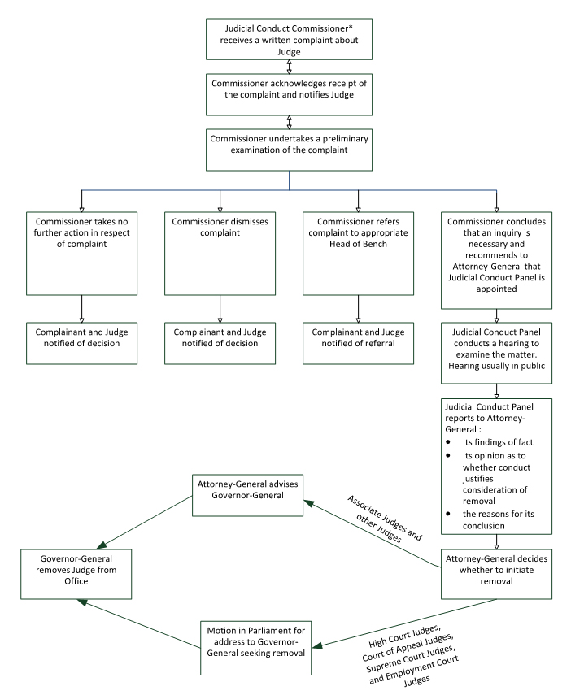

Complaints Process
How to complain about the conduct of Judges and how complaints are assessed.
Process
The process is explained in the Judicial Conduct Commissioner and Judicial Conduct Panel Act 2004 (the Act).
On their receipt, complaints are referred to the Commissioner, or sometimes the Deputy Commissioner, for investigation (described in the Act as a preliminary examination).
The Act provides a number of options following the investigation.
In the most serious cases the Commissioner can recommend that the Attorney-General appoint a Judicial Conduct Panel. This will happen if the Commissioner is of the opinion that an inquiry is necessary or justified and that the Judge's conduct may warrant the consideration of removal from office.
In some cases where the Commissioner has concern but not sufficient to justify consideration of the removal of a Judge, there will be a referral of the complaint to the Judge (known as the Head of Bench) who is in charge of the Court in which the Judge complained about sits. What action may then follow is a matter entirely for the Head of Bench.
The Commissioner may also dismiss a complaint or take no further action in respect of it.
You can read more details of the Judicial Complaints Process and see a diagram of how it works.
Overview
If you would like to make a complaint about the conduct of a Judge you should write to the Judicial Conduct Commissioner. All complaints about the conduct of a Judge are to be sent to the Commissioner in the first instance.
The process is intended to help maintain public confidence in the Judicial system, and to protect its impartiality, integrity and independence.
Anyone can complain about a Judge, but complaints must be about the conduct of a Judge, whether inside or outside court. The process cannot be used to challenge the legality or correctness of a Judge's decision. In most cases a decision with which you do not agree can be reviewed by another judicial authority or there can be an appeal to a higher court.
When considering a Judge's conduct, you should be aware that it is sometimes necessary for Judges to be assertive in their manner. Judges must manage the court so that the proceedings are dealt with efficiently and effectively, without undue delay.
Complaining about a Judge is a serious matter. While Parliament makes laws, Judges interpret and apply laws to the cases they deal with in court. Judges must be independent of the Government and be able to make decisions which are right in law and fairly arrived at, without being influenced by any other factors.
Making a complaint
A complaint has to be made in writing to the Judicial Conduct Commissioner at the following address:
Judicial Conduct Commissioner
Office of the Judicial Conduct Commissioner
PO Box 2661
Wellington
or by emailing it to judicialconduct@jcc.govt.nz
Your written complaint must:
- identify the Judge you are complaining about;
- identify yourself; and
- state what your complaint is about.
The Commissioner will have to dismiss your complaint if it does not include all the necessary information but you may ask the Commissioner for assistance.
The Commissioner will confirm in writing that your complaint has been received. The Judge you are complaining about will also be notified and may receive a copy of your complaint.
In some cases the Commissioner may ask you to complete a statutory declaration about your complaint. Refusal to do so may result in your complaint being dismissed.
Preliminary examination
The law requires the Commissioner to conduct a preliminary examination of the complaint. During the examination, and in accordance with the principles of natural justice, the Commissioner may make inquiries about the complaint and look at any relevant court documents. At the conclusion of the preliminary examination, the Commissioner must take one of the following steps:
- recommend that the Attorney-General appoint a Judicial Conduct Panel to inquire into any matter concerning the conduct of the Judge concerned (section 18).
- refer the complaint to the Head of Bench (section 17);
- dismiss the complaint (section 16); or
- decide to take no further action (section 15A).
In some cases consideration of a complaint may be deferred (e.g. if the complaint relates to matters currently being dealt with by a court).
Recommending a Panel
The Commissioner may recommend to the Attorney-General that a Judicial Conduct Panel be appointed to inquire further into the complaint. The Commissioner will recommend a Panel be appointed if the conduct complained of may warrant consideration of the removal of the Judge. The Panel may recommend that the Judge be removed from office.
The Commissioner must write to both you and the Judge with reasons for the recommendation that a Panel be convened.
Two of the Panel members will be drawn from the ranks of Judges or retired Judges, although one of the two can be a senior lawyer. The other member will be a person who is not a Judge, a retired Judge or a lawyer.
The job of the Panel is to inquire further into the conduct of the Judge. The Panel has the same powers as a Commission of Inquiry and is required to act according to the principles of natural justice.
Although the Act provides for Panel hearings to be held in public, part or all of a hearing may be held in private to protect your privacy, the Judge's privacy, or the public interest. The Panel also has the power to restrict publication of any documents that are part of the hearing, or any information about the hearing.
The Attorney-General must appoint a special counsel to present the case against the Judge. The Judge being complained about may appear at the hearing and be represented by a lawyer. The Panel may also give permission for other people to appear at the hearing and be represented by a lawyer.
Once the hearing is over, the Panel reports to the Attorney-General on its:
- findings of fact;
- opinion as to whether the conduct justifies consideration of removal; and
- reasons for its conclusion.
Removing a Judge
If the Panel recommends removing the Judge, the Attorney-General must decide whether to agree or disagree with the recommendation. If the Attorney-General agrees that the Judge should be removed, then one of two processes occurs, depending on the type of Judge being complained about.
- For Judges of the Supreme Court, Court of Appeal, High Court, and Employment Court, the Attorney-General must address Parliament to propose that it recommend to the Governor-General that the Judge is removed. If Parliament makes that recommendation the Governor-General will then remove the Judge from office.
- For Associate Judges and all other Judges, the Attorney-General advises the Governor-General who can then formally remove the Judge from office.
Referring a Complaint
The Commissioner must refer complaints to a Head of Bench unless he or she has decided to take no further action in relation to the complaint, has dismissed the complaint or has recommended a Judicial Conduct Panel. When the Commissioner refers a complaint to a Head of Bench, the Commissioner will advise both you and the Judge. The Commissioner will refer the complaint to the Head of Bench responsible for the court the Judge complained about currently sits on.
A complaint may also be referred to the Head of Bench where both the Commissioner and Deputy Commissioner decide they have a conflict of interest in relation to a complaint.
The Judiciary in 1999 set up an internal complaints process and this process continues to apply to deal with complaints that would not justify a Judge's removal from office.
This is a voluntary process, because each Judge is independent from all other Judges. In general, Judges are accountable through the public nature of their work and the requirement that they give reasons for their decisions. The immunity from direct discipline exists to ensure that justice is administered impartially. Where complaints are about the outcome of a case, someone who is affected and is dissatisfied with the outcome will generally have rights of appeal or review. A complaint about the outcome of a case cannot be considered by the Commissioner under the complaints process.
If any misconduct of the Judge could be addressed on appeal or review, a complaint will not generally be accepted about the Judges conduct until those opportunities have been taken. If the Commissioner refers a complaint to the Head of Bench, you and the Judge complained about will be advised.
Action on complaint
For complaints of substance, the Head of Bench will determine how to deal with the matter appropriately. The Head of Bench will consider responses such as asking the Judge to apologise to the complainant, or offering the Judge appropriate assistance to avoid the inappropriate conduct happening again.
If you are not satisfied with the response from either the Head of Bench or the Judge concerned you may write to the Judicial Complaints Lay Observer. The Lay Observer is an entirely separate office from the Judicial Conduct Commissioner.
Judicial Complaints Lay Observer
The role of the Judicial Complaints Lay Observer is to consider the complaint and the way it was handled by the Judiciary and to then decide whether the matter should be reconsidered by the Head of Bench. The Judicial Complaints Lay Observer has the power to review the complaint, the way it was processed, any response from the Judge and any other matters that may be relevant.
If the Judicial Complaints Lay Observer considers that a decision by the Head of Bench not to pursue the complaint should be reviewed, he or she may request that the Head of Bench reconsider the complaint.
Both the consideration of the complaint, and any request to reconsider, will be in confidence. The Judicial Complaints Lay Observer will inform you whether or not a request for reconsideration has been made. The Head of Bench may then reconsider whether the complaint has substance.
Time limit on seeking a review by the Lay Observer
All requests for a review of the decision made by a Head of Bench in regard to any complaint against a Judge must be referred to the Judicial Complaints Lay Observer within six months from the date that the Head of Bench decided that a complaint did not have substance.
Contacting the Judicial Complaints Lay Observer
All communications with the Judicial Complaints Lay Observer must be in writing. You can write to the Judicial Complaints Lay Observer at the following address:
The Judicial Complaints Lay Observer
Office of the Judicial Complaints Lay Observer
PO Box 2538
Wellington
A decision to take no further action
This decision may be made when the Commissioner is satisfied that in all the circumstances further consideration of the complaint would be unjustified.
Section 15A sets out some of the circumstances which could lead to such a decision but the Commissioner may take any other circumstances into account.
Dismissing a Complaint
A complaint must be dismissed if:
- It is not within the Commissioner's jurisdiction;
- It has no bearing on judicial functions or judicial duties;
- It is frivolous, vexatious, or not in good faith;
- The subject matter is trivial;
- It is about a judicial decision, or other judicial function, that is or was subject to a right of appeal or right to apply for judicial review;
- The person who is the subject of the complaint is no longer a Judge;
- The subject matter of the complaint was considered before the commencement of the Act by the Head of Bench or the Judicial Complaints Lay Observer; or
- The Commissioner has previously considered the subject matter of the complaint, and there are no grounds to justify referring the complaint to a Head of Bench, or recommending that the Attorney-General establish a Judicial Conduct Panel.
When the Commissioner dismisses a complaint he or she will write to both you and the Judge to explain why. A copy of the decision and complaint is also likely to be sent to the Head of Bench.
Diagram of Process
*Judicial Conduct Commissioner or Commissioner includes a Deputy Judicial Conduct Commissioner
FAQ
What if I complain directly to the Head of Bench or the Judge instead of to the Commissioner?
The Head of Bench will forward any complaint concerning the conduct of a Judge to the Commissioner.
Why is there both a Judicial Conduct Commissioner and a Judicial Complaints Lay Observer?
The Judicial Conduct Commissioner is part of the statutory complaints process. The Judicial Complaints Lay Observer is a separate office that deals with the way the Head of Bench and the Judge handle a complaint in terms of the voluntary judicial complaints process.
What happens if my complaint is against the Head of Bench?
The Chief Justice is responsible for complaints made against the President of the Court of Appeal, Chief High Court Judge, Chief Judge of the Employment Court, Chief District Court Judge and Chief Judge of the Māori Land Court.
The Chief District Court Judge is responsible for complaints made against the Principal Family Court Judge, Principal Youth Court Judge and Principal Environment Court Judge.
The Attorney-General is responsible for complaints made against the Chief Justice.
What is the role of Judges?
Judges are members of the New Zealand Judiciary, which is an independent branch of government. The two other branches are the Executive and the Legislature (Parliament).
The Judge's role is to apply the law. Judges act in accordance with the law set down by Parliament and with law they develop themselves, including by interpreting the meaning of legislation passed by Parliament.
It is important that political or other pressures do not influence Judges when they are making decisions in individual cases, otherwise the integrity of the justice system would be undermined. There are several mechanisms in place which help to maintain Judges' independence, such as permanent tenure and protection of remuneration.
In addition Judges cannot be sued for actions performed in a judicial capacity. This means decisions can be made without interference or fear of adverse personal consequences.
If the decisions of a Judge result in negative or unfair consequences appeal and review rights are available.
To whom are Judges accountable?
Judges are accountable mainly through appeal or review processes and public scrutiny. They are not answerable for their decisions to any superior authority. Nor are they accountable in the same way as, for example, Government Ministers are to Parliament.
This is because Judges have to be independent, so that the justice system will be impartial. To be effective, however, Judges must have the confidence of the public. This means that although Judges do not require public support for everything they do, people must have confidence in their honesty and integrity, and in the impartiality, consistency and fairness of their decisions.
How do Judges maintain public confidence?
There are several ways in which Judges keep the public confidence, including:
- an appointment process aimed at the selection of the most suitable people to be Judges;
- continuing education for Judges;
- public scrutiny through open justice; and
- appeals and judicial review.
Appointments Process
New Judges are sought through advertisements or by seeking nominations from a range of people and agencies. Applicants must have legal qualifications, have been a barrister or solicitor for at least seven years, and have a reputation for honesty, integrity, impartiality and good judgement.
The Governor-General appoints all Judges, in most cases on the advice of the Attorney-General. There are two exceptions. First, Māori Land Court Judges are appointed on the advice of the Minister of Māori Affairs. Second, the Governor-General takes the advice of the Prime Minister when appointing the Chief Justice. The final recommendations for appointment are made only after an extensive consultation process.
More information about the appointment of Judges is available from the Attorney-General's Judicial Appointments Unit. The Unit's contact details are:
The Judicial Appointments Officer
The Attorney-General's Judicial Appointments Unit
DX SX 10088
Wellington
Telephone: 04 473 3890 or 0800 473 389
Facsimile: 04 473 3891
Ongoing Education
Judges receive continuing education from the Institute of Judicial Studies. Further training helps Judges maintain and enhance their knowledge and the quality of their decisions.
Open Justice
Judges generally work in public and have to give reasons for their decisions. Most court hearings are open to the public except some cases that are sensitive and confidential. This public scrutiny is a check on the conduct of Judges. Because Judges' decisions are published, their reasoning is open to further scrutiny and professional criticism in the media and specialist legal journals.
Appeal and Review
Judges are accountable because their decisions are open to appeal and, in some cases, review. If a Judge has made an error in law, or misinterpreted the facts in a case, then it is possible to appeal. Every decision a Judge makes can be appealed against, except for the decisions made by a final appeal court, such as the Supreme Court.